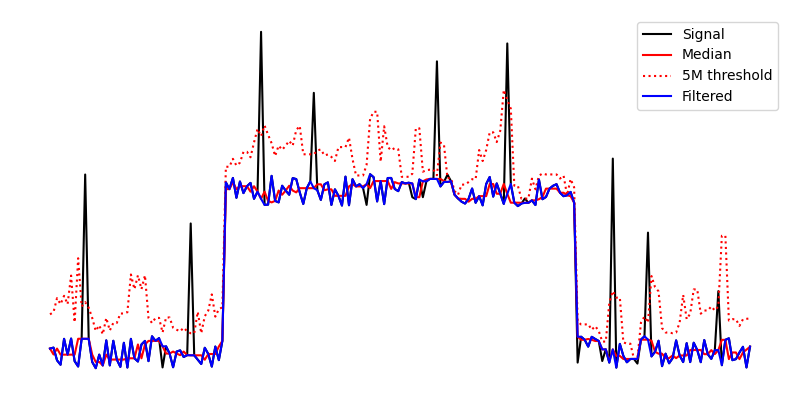

Filtering Tool¶
Tools -> Filtering
Changes in analytical conditions can cause ‘spikes’ in data, regions of extremely low or high signal resulting from instrument noise. These can be removed by applying a local filter at the position of each spike. The Filtering Tool removes spikes by comparing pixel values to a locally defined threshold, outlying values are then replaced with the local mean or median. A visual example is provided in Application of a rolling median filter..
The parameters of the filters in Available Filters are set using the inputs directly below the filter selection box. To toggle visibility of a filter (for comparison) click the Filter Visible button.
{kind=link}

Application of a rolling median filter.¶
Available Filters¶
Type |
Threshold |
|
|---|---|---|
Rolling Mean |
σ |
Distance in stddevs from the local mean. Stddev excludes the tested value. |
Rolling Median |
M |
Distance in medians from the local median. |
See also
- Example: De-noising an image.
Example using the filtering tool.